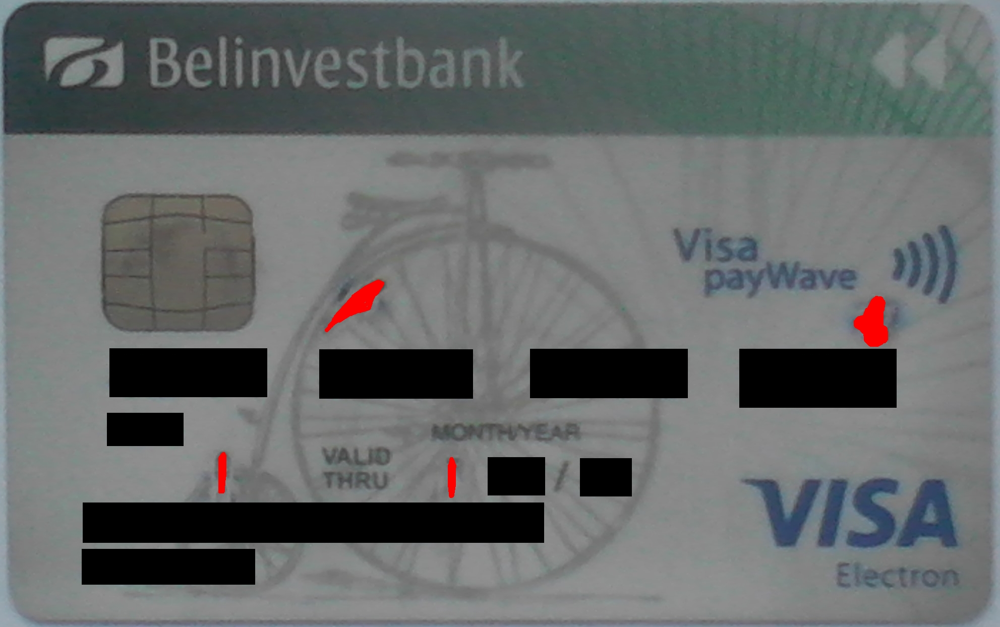
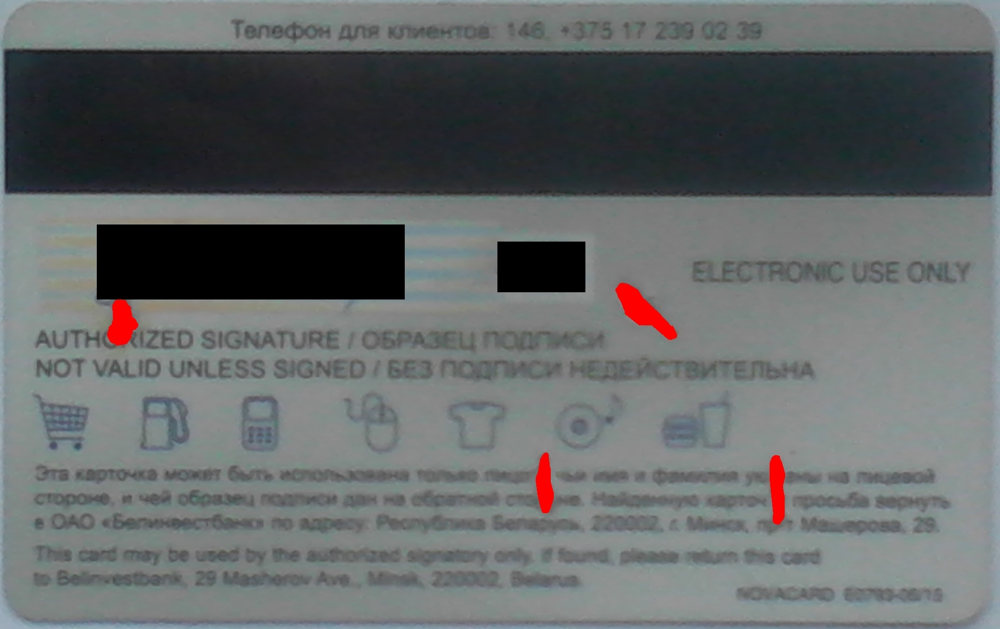
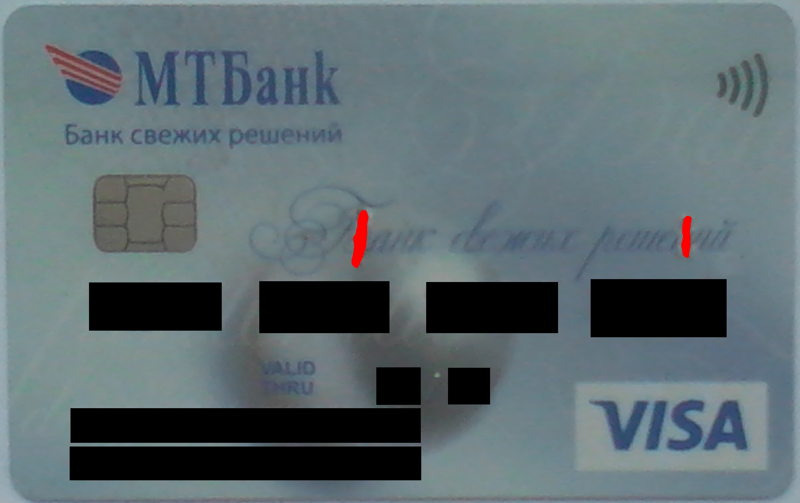
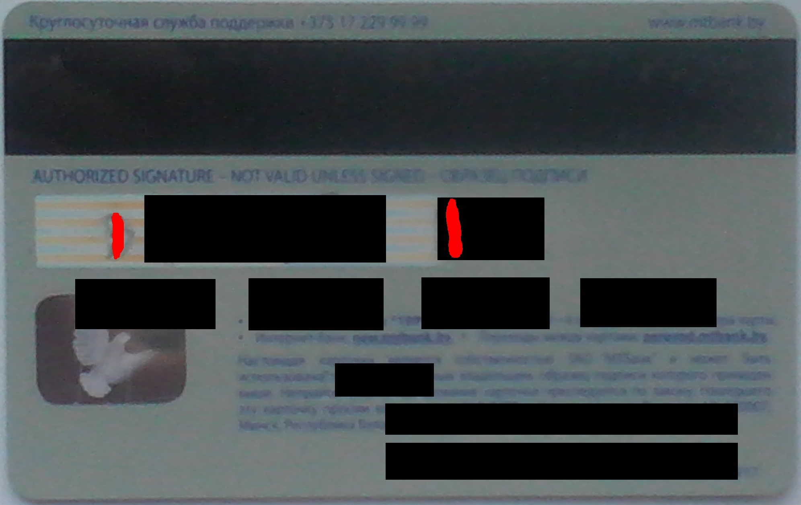
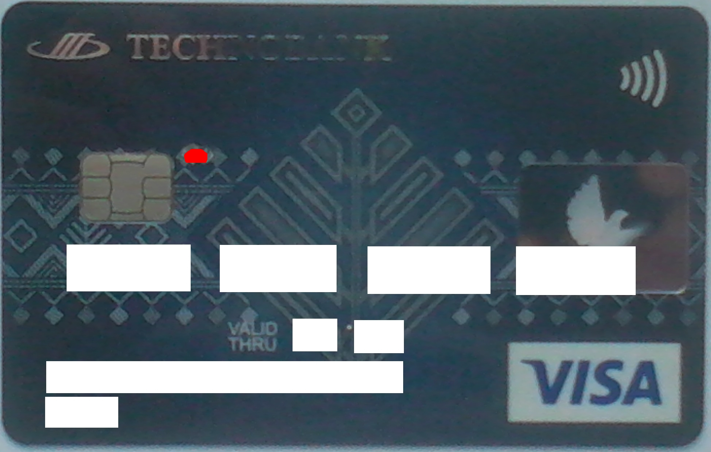
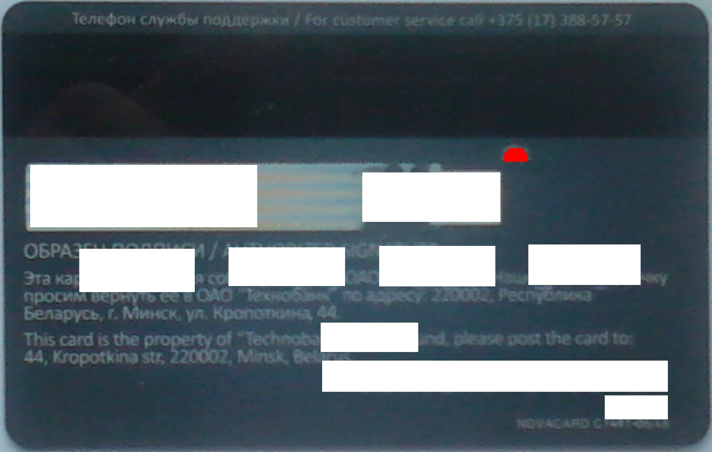
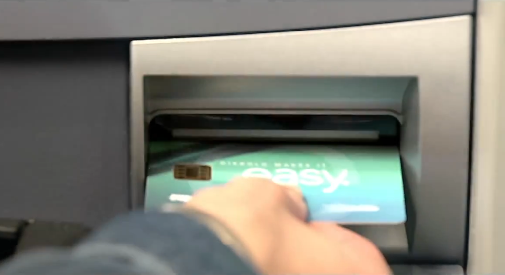

This article was inspired by amazing Karol Nowak's post: R.I.P. PayPass (mBank). As for me (flaz14 or Flaz Fourteen), I had written a lot of comments under the article. Now it's time to collect, summarize and sprinkle them with a bit of hands-on experience.
There is a plenty of details to talk about how Visa payWave (or MasterCard PayPass) works. Simply put, payWave is backed with antenna. If you destroy antenna, you disable payWave. Karol Nowak discovered wires with aid of x-rays. That gave us clear image of antenna. As Karol said, an external flash light plus camera had did wonders too. Anyway, permanent "photo" of the internals of a card brings a lot of opportunities to study its structure. But if you haven't x-rays tube or flash light and camera you can use domestic LED torch, it makes magic also (especially when a torch is very bright).
I directed the torch perpendicularly to the surface of the card. And saw solid lines inside the card (for better result it was done in dark room; torch was fitted closely to the surface as much as possible). Location of antenna was mostly the same as for mBank. But connectors near the chip were more fat and long. Also, I noticed a thin line that had encircled the whole card, not only magnetic tape.
I decided do not break thin line at the edge of the card because such a hole is mechanicaly unsafe. And I didn't drill the card but pierced it with scorching needle (incidentally, I was afraid to overheat the chip by the needle). As a result, I made four holes. In the illustration below you can see "patched" version of the card (holes are higlighted in red):
 
After modification, payWave didn't work in POS terminals. But chip and magnetic tape worked well in a variety of ATMs (but I never checked contactful methods in POS terminals).
Another card had slightly different layout of wires comparing to the former. Again, I discovered antenna with aid of LED torch and interrupted them. The needle pierced the card very easily! But I noticed quite thin wires there. While in the old card it was a bit challenging to break the wires. So I made only two holes at that time :)
 
Recently I've got yet another card with payWave. The card was black mostly. So it was hard to discover the antenna with aid of LED torch. I just didn't see the wires. Only thick wires around the chip were visible. So I decided to make only one hole and interrupt one of those fat connectors:
 
payWave didn't work after my patch (as expected). But POS terminals didn't work also (simply squeak and reject the card)! Neither by chip, neither by magnetic tape (but I checked only chip-enabled POS terminals; probably, plain old terminal could accept modified card).
Typically, an ATM took the card, prompted for PIN, displayed an error after entering PIN (something like "unexpected error occured") and thrown out the card. Only one ATM in the city accepts the card. That ATM has quite innovational card reader. You must put the card not lengthwise but accros direction of insertion, like it's depicted on the illustration below (the image has been taken from Антискимерский метод от Diebold: карту вставляют боком post):

What did I wrong? Seems that I made a hole very near from the chip. And the sensors inside an ATM (or POS terminal) don't "see" the card. Those sensors are optical, I think. Otherwise how an ATM can detect a hole (that's small, not larger than two millimeters) and decide that card isn't presented in the reader?
Debit card is more than just a piece of plastic with some little things fused into. You can get even more fun with your contactless card. For example, you can dissolve plastic, extract chip and connect it to antenna in the form of ring. Please start from nice Внутренности карты Яндекс.Денег — MasterCard PayPass article written by BarsMonster. Anyway, ring is more convinient for everyday use than card: you don't need to get a ring from your pocket or wallet, ring is more durable than card, etc. Obviously, it's possible to mount a kind of "Activate" button that enables payWave only when it's pressed and keeps antenna disabled otherwise.
As for future, I plan to make an experimental card with a lot of closable holes in it. And perform some tests with such a punchcard in ATMs of my city. Stay tuned :)
__________
PS I've also tried to examine other plastic cards with aid of LED torch. For example, my office security card has small chip in the corner that's connected to large fat circle in the middle. Obviously, plain-old debit cards don't contain any wires.
PS2 In case of a card where card number (card holder name, etc) is not flat you have to paint them out from the photo of back side as well as from front side. Because relief symbols are still visible on the back.
PS3 Sorry for pure quality of the photos.
{kind=link}